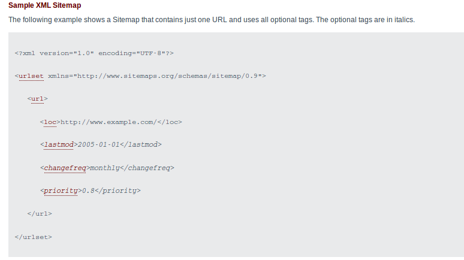

Le but de ce projet est la création d’une petite application qui génère le fichier sitemap.xml et sérialise les informations des fichiers html dans un fichier data.ser qui permets de faire la recehrche par mot-clef

Le SiteMap est un fichier XML qui liste les URL des pages HTML données en lui passant les balises H1 et title, pour chaque URL il nous renseigne la date de sa dernière modification son emplacement et sa priorité.
le Sitemaps permet aux webmasters d'indiquer facilement aux moteurs de recherche les pages de leurs sites à explorer. Dans sa forme la plus simple, un plan Sitemap est un fichier XML qui répertorie les URL d'un site ainsi que des métadonnées complémentaires sur chaque URL (date de dernière modification, fréquence de révision et importance relative par rapport aux autres URL du site), de façon à favoriser une exploration plus intelligente du site par les moteurs de recherche.